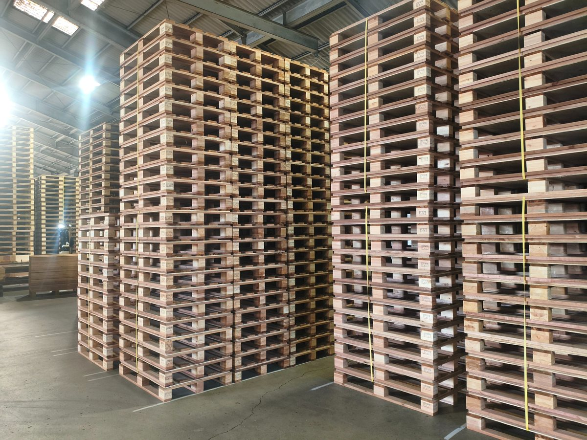
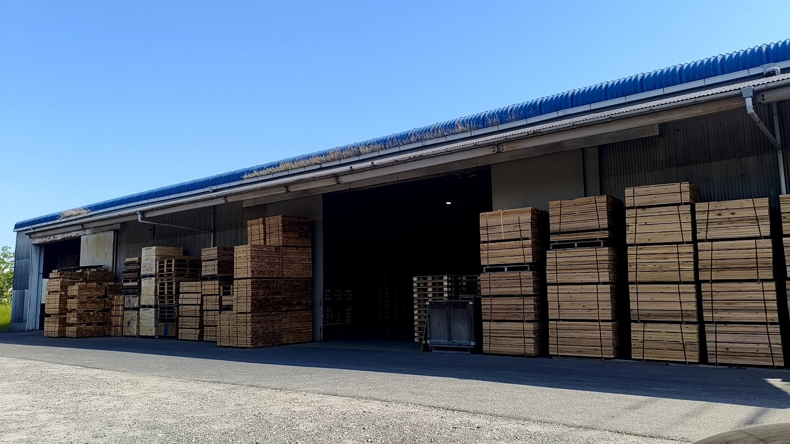
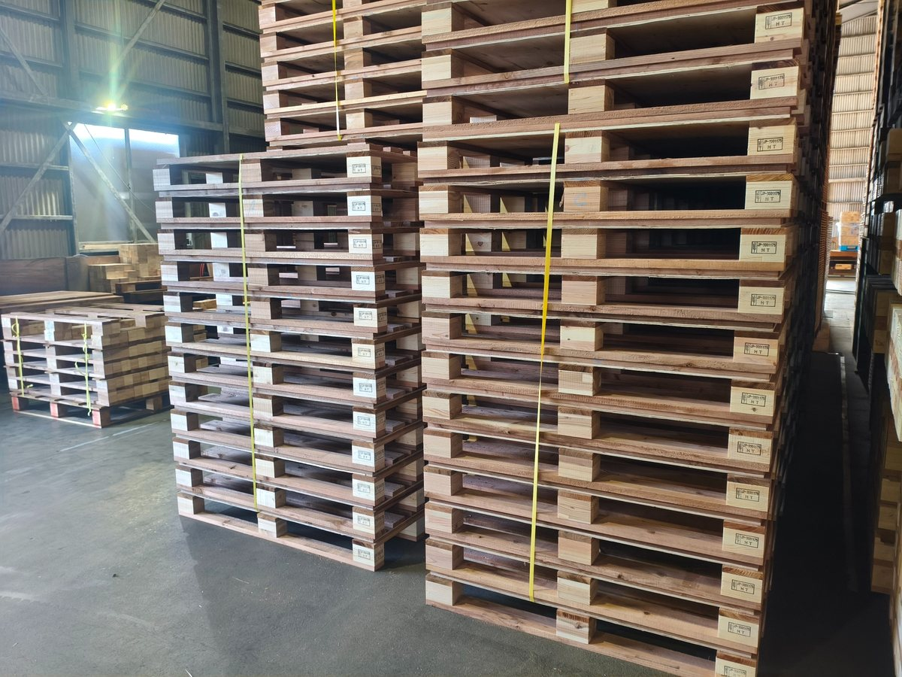
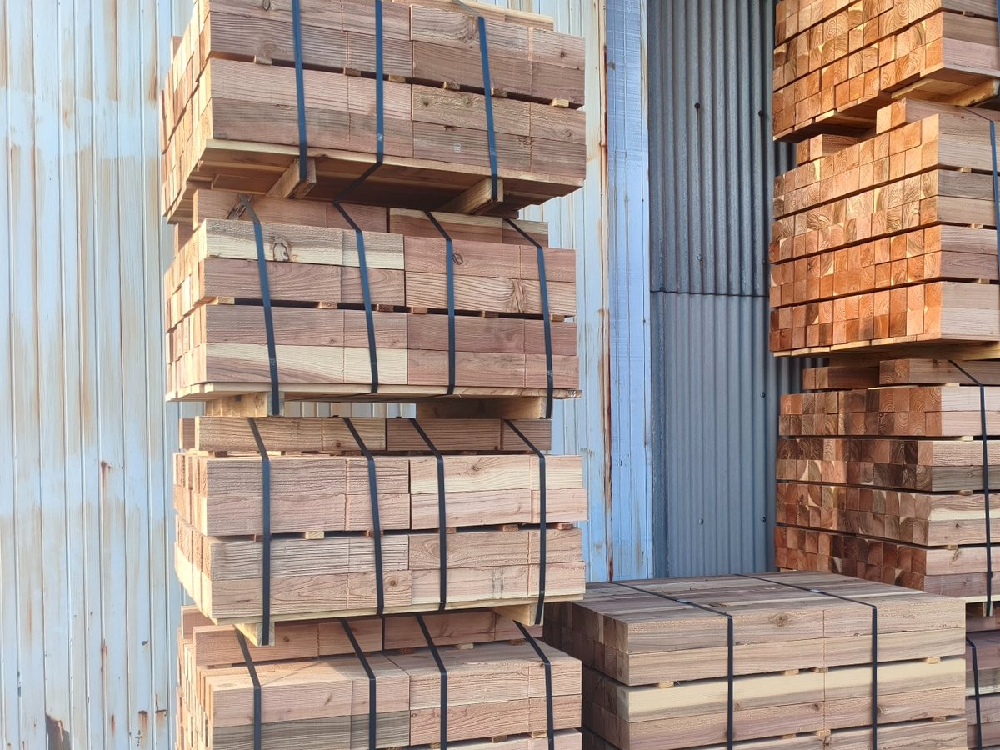
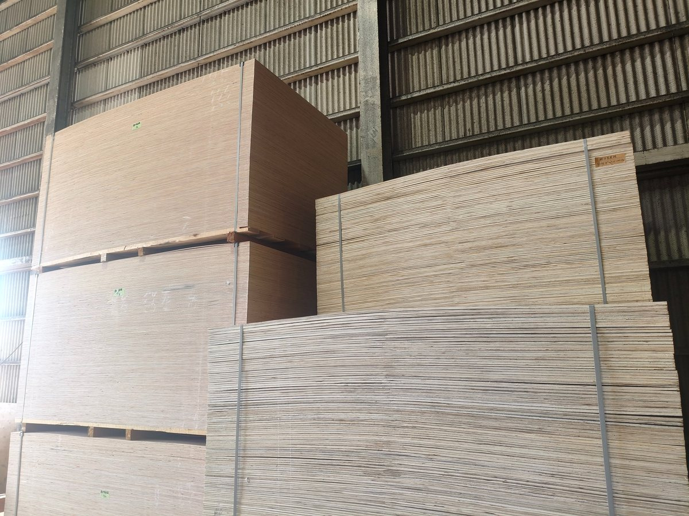
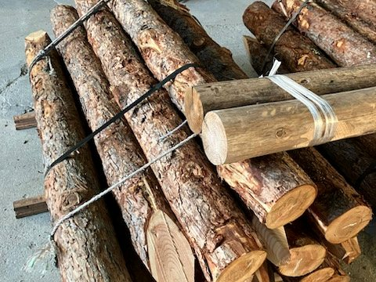

画像確認用ページ
本番ナビには出していない確認用ページです。商品名と写真内容が合っているか、写真の切れ方に違和感がないかを確認するためのページです。

トップ・お問い合わせ用
assets/img/warehouse-pallets.jpg
トップのメイン写真と、お問い合わせページ右側写真で使用。
確認点：中島屋の実態に合う写真か。パレット・木材資材の会社として自然に見えるか。

会社概要用
assets/img/warehouse-wide.jpg
会社概要ページの写真で使用。
確認点：作業場・資材置き場として自然か。会社概要に置いて違和感がないか。

木製パレット
assets/img/product-pallets.jpg
トップの商品カード、取扱商品ページの木製パレット欄で使用。
確認点：木製パレットと分かる写真か。物流用パレットの説明と合っているか。

角材・板材
assets/img/product-lumber.jpg
トップの商品カード、取扱商品ページの角材・板材欄で使用。
確認点：角材・板材として見えるか。丸太や合板に見えてしまわないか。

合板・ベニヤ
assets/img/product-plywood.jpg
トップの商品カード、取扱商品ページの合板・ベニヤ欄で使用。
確認点：合板・ベニヤとして見えるか。板材・角材と見分けがつくか。

丸太杭・丸太
assets/img/product-logs.jpg
トップの商品カード、取扱商品ページの丸太杭・丸太欄で使用。
確認点：丸太杭・丸太として見えるか。土木・仮設用途の説明と合っているか。